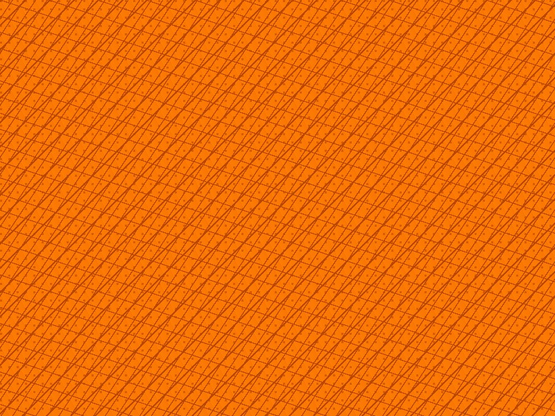
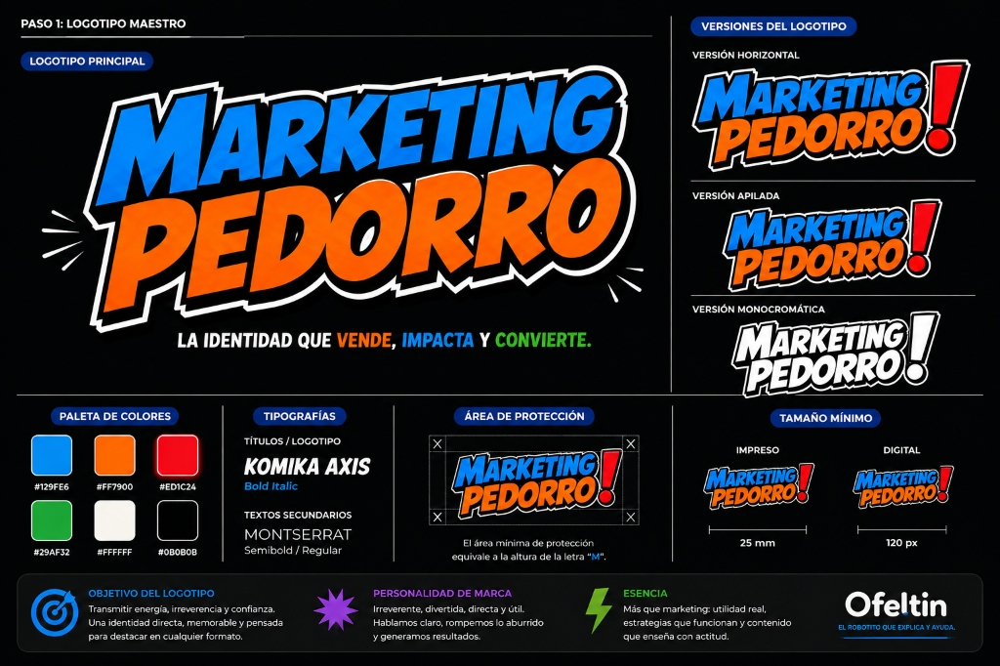
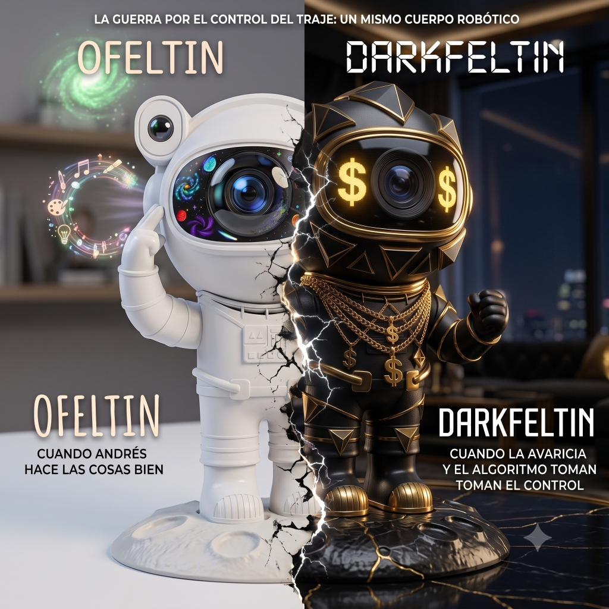
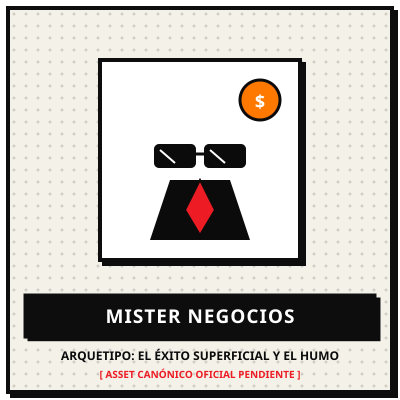
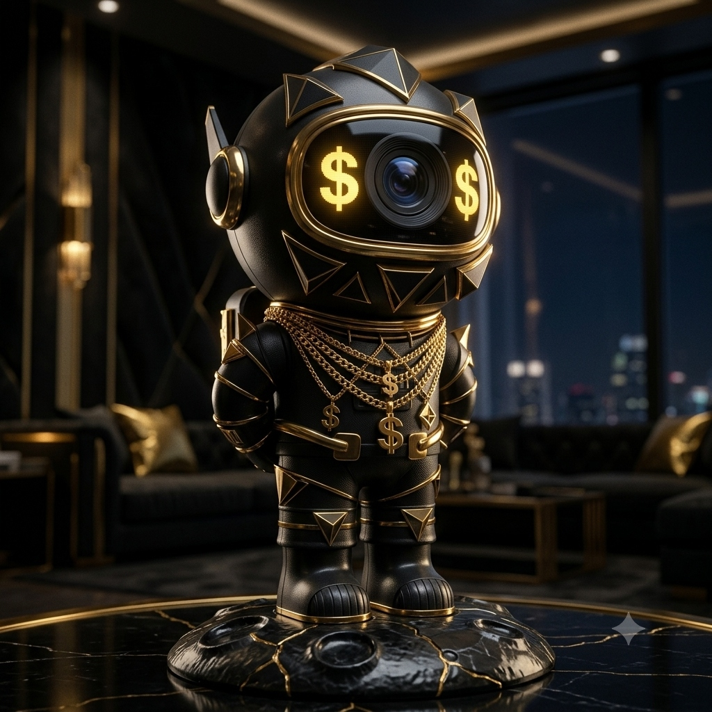
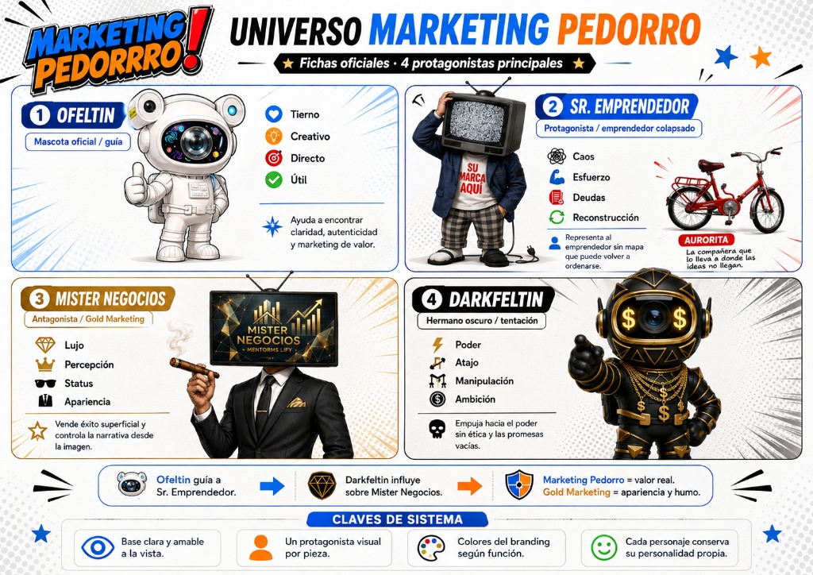
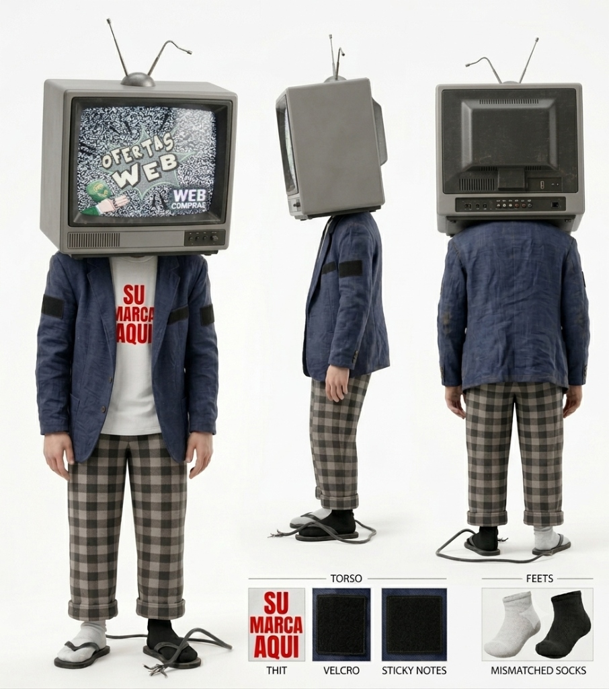
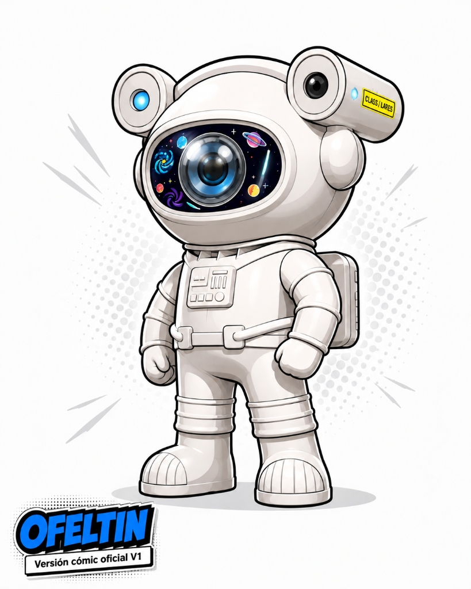
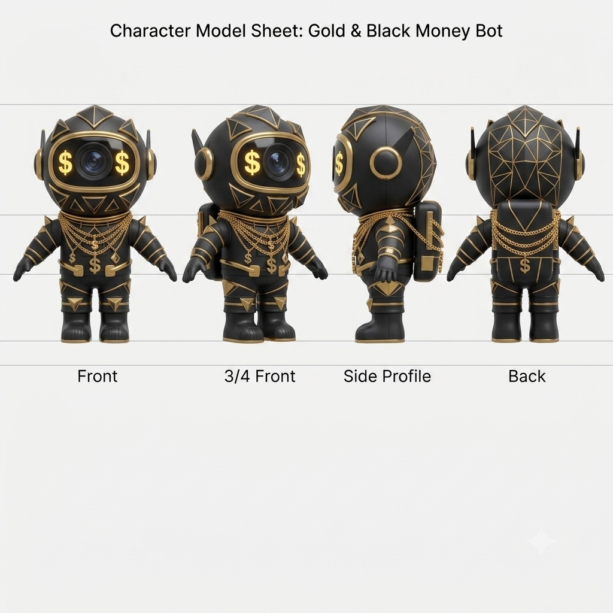

MARKETING
SIN HUMO.
ESTRATEGIA QUE PODÉS USAR.
No vendemos humo. Traducimos el caos en claridad. El laboratorio del Universo Ofeltínesco para ordenar tus ideas, bajar la ansiedad y construir un negocio que avance de verdad.
🤖 Ofeltín: «Vamos de a poquito. No necesitás correr; necesitás avanzar. ❤️ Con amor de metal.»
👤 Sr. Emprendedor: «¡Tengo 40 pestañas abiertas, 3 cursos sin terminar y se me está agotando la batería!»

EL INCENDIO MENTAL
CUANDO LA CREATIVIDAD SE VUELVE CAOS
Atrapado entre la deuda, las promesas de oro y el exceso de ideas sueltas. Tita (La Lamparita) prende ideas sin parar y Tito (El Cerebrito) sobreanaliza mil dudas.
MÁS IDEAS SUELTAS
MÁS HERRAMIENTAS CARAS
MÁS CAOS MENTAL
BATERÍA EN CERO
💬 Diagnóstico: «No es falta de talento, es falta de rumbo. Del caos a la claridad.»

FICHA OFICIAL CANÓNICA — SR. EMPRENDEDOR (ANATOMÍA, ESENCIA Y REGLAS DE REPRESENTACIÓN)
🧳 EL BAÚL DE LAS IDEASURAS
No destruimos las ideas. No las despreciamos ni decimos que son malas. Les decimos: «NO AHORA.»
🤖 Ofeltin: «Guardar una idea en el baúl no significa abandonarla. Significa dejar de permitir que una idea nueva destruya la ejecución de la que ya empezaste.»

EL ENCUENTRO: «VAMOS DE A POQUITO»
MARKETING PEDORRO ≠ MAL MARKETING
Es usar humor y orden para salir de la trampa de la hiperactividad vacía.
01
Tácticas sin Diagnóstico
Copiar el formato de moda sin saber si tu cliente objetivo consume ese canal ni cómo se conecta con tus ventas.
02
Obsesión por Vanidad
Celebrar visualizaciones o me gusta que no generan consultas calificadas ni sostienen la rentabilidad del negocio.
03
Contenido en Masa
Saturar todos los días con publicaciones genéricas por el mero hecho de «estar presente», aportando solo más ruido.
04
Automatización Prematura
Comprar software complejo o armar embudos de 10 pasos antes de haber validado una propuesta comercial en mano a mano.
05
Fórmulas Mágicas
Buscar atajos y «hacks secretos» en lugar de definir con nitidez qué problema concreto resolvés y para quién.
06
Actividad sin Avance
Terminar la semana agotado por hacer veinte tareas dispersas sin haber movido un solo indicador de negocio real.
CÓMO PIENSA LA MARCA
Antes de construir cualquier cosa, Dr. Nicho & Michin hacen las 4 preguntas innegociables:
👨⚕️ Dr. Nicho: «¿Para quién es? ¿Qué problema resuelve? ¿Lo necesita? ¿Tiene presupuesto para pagarlo?»

MANUAL DE IDENTIDAD VISUAL — MARKETING PEDORRO (SISTEMA OFICIAL DE BRANDING Y TIPOGRAFÍA)
«ATENCIÓN CON INTENCIÓN»
Llamar la atención es fácil; retenerla con valor y convertirla en confianza comercial requiere criterio, mensaje y respeto por la audiencia.
«ACTUALIZÁ LO QUE CAMBIA. PRESERVÁ LO QUE CONVIERTE.»
Las plataformas mutan todos los meses, pero la psicología de compra y la claridad de propuesta son universales y permanentes.
«PERSONALIDAD REAL, NUNCA DE CARTÓN»
La gente no conecta con marcas corporativas frías ni con gurúes artificiales. Conecta con voces honestas que hablan su mismo idioma.
«IDEAS CLARAS, RESULTADOS REALES»
Si no podés explicar tu estrategia en una servilleta, no tenés una estrategia; tenés una lista de deseos cara y confusa.
OFELTÍN VS EL PLANETA DEL HUMO
Fórmulas mágicas, Lambos alquilados y facturación falsa frente a la claridad y el avance constante de La Aurorita.

FIG 02. EL PLANETA DEL HUMO (GURÚES, CTR INFINITO Y FOMO)

FIG 03. OFELTIN VS DARKFELTIN (EL ALGORITMO Y LA AVARICIA)

FICHA OFICIAL CANÓNICA — MISTER NEGOCIOS («EL ÉXITO NO SE LOGRA, SE APARENTA»)
GOLD MARKETING (MISTER NEGOCIOS)

💰 Mister Negocios: «¡No arregles tu negocio! Comprá mi método de 90 días, alquilá un Lambo y facturá durmiendo.»
✕
Foco en la apariencia, el lujo alquilado y el postureo.
✕
Promesas de «hacerse rico en 7 días sin esfuerzo».
✕
Métricas de vanidad infladas sin conversión comercial.
MARKETING PEDORRO (LA AURORITA)

🚲 La Aurorita: «Pedal a pedal. Sin correr, sin atajos de cartón. Equilibrio, constancia y clientes satisfechos.»
✓
Autenticidad, humor inteligente y diagnóstico honesto.
✓
Sistemas sostenibles basados en resolver problemas reales.
✓
Foco en rentabilidad, margen y entregables de valor.
ZONA DE ADVERTENCIA
EL PELIGRO DE LOS ATAJOS OSCUROS
Darkfeltin nació como la consecuencia de un experimento incompleto: poder sin ética, manipulación y atajos tramposos. Rechazamos categóricamente:
✕
Comprar bases de datos o enviar spam masivo disfrazado de prospección.
✕
Usar falsos contadores de escasez o testimonios fabricados.
✕
Prometer resultados milagrosos sin un modelo de negocio sólido.
✕
Disfrazar falta de producto con exceso de manipulación psicológica.

DARKFELTIN — EL EXPERIMENTO FALLIDO Y LA AVARICIA

FICHA OFICIAL CANÓNICA — DARKFELTIN («EL PODER SIN ÉTICA LO CORROMPE TODO»)
EL MÉTODO: TRES PASOS CLAROS
Como dice Detectivilin: «Creer no sirve. Probemos con datos y hechos.»
🔎 Detectivilin: «Primero se aclara, luego se valida y finalmente se ejecuta. Sin saltarse etapas.»
01
CLARIDAD
Definir con absoluta precisión qué oferta entregás, cuál es tu propuesta de valor diferencial y quién es exactamente la persona que tiene el problema y el presupuesto para resolverlo.
02
CRITERIO
Aprender a decir que no. Filtrar el 90% de las modas pasajeras para quedarse únicamente con el mensaje, el canal y la acción que conectan tu producto con la demanda real.
03
EJECUCIÓN
Implementar rutinas y sistemas comerciales consistentes. Medir la conversión real, corregir sobre la marcha y avanzar paso a paso sin dispersión táctica.
DONDE VIVE EL CONTENIDO
Clemente del Lente documenta la verdad entre bambalinas, mientras Michael Ofertas la grita a los cuatro vientos.
🕵️ Clemente: «Yo solamente estoy filmando...» — 📣 Michael: «¡¡¡SEÑORAS Y SEÑORES, CLEMENTE DESCUBRIÓ ALGO!!!»

ESTRUCTURA DE CONTENIDOS — PLANTILLA DE ALTA CONVERSIÓN Y BENEFICIOS CLAVE
EPISODIOS & DEBATES
Desmontajes profundos de estrategias reales, entrevistas y análisis de casos anti-humo.
CÁPSULAS RÁPIDAS
Golpes directos de criterio en 60 segundos para destrabar decisiones diarias.
ESTRATEGIA B2B
Artículos técnicos, marcos de trabajo y reflexiones de posicionamiento de marca.
GUÍAS & MAPAS
Plantillas descargables, checklists operativas y frameworks listos para aplicar.
LOS 4 PROTAGONISTAS PRINCIPALES
Cada personaje representa un estado mental, una fuerza o una lección en el viaje del emprendedor.

UNIVERSO MARKETING PEDORRO — FICHAS OFICIALES Y DINÁMICA DE SISTEMA

03. EL PROTAGONISTASR. EMPRENDEDOR
Cabeza de TV con estática, velcros para notas, medias desparejas y cable suelto. Representa el esfuerzo sin mapa.

00. EL CORAZÓNOFELTIN
Versión cómic oficial V1. Aprende, pregunta y acompaña con curiosidad y sentido común. Su lema: «Vamos de a poquito. ❤️ Con amor de metal.»

01. EL ANTAGONISTADARKFELTIN
Gold & Black Money Bot. Cadenas de oro, ojos de dólar y avaricia algorítmica. La consecuencia de atajos sin ética.
MISTER NEGOCIOS
Obsesionado con el éxito aparente, Lamborghinis y facturación sin margen. Promete atajos mágicos en 90 días.
❤️ CON AMOR DE METAL
BASTA DE DAR VUELTAS.

BASTA DE DAR VUELTAS.
HAGAMOS ALGO.
Sumate al canal y al laboratorio de Marketing Pedorro para aprender marketing sin filtro, con humor y sin pelos en la lengua.
RECIBÍ EL BOLETÍN ANTI-HUMO
Una edición semanal con análisis prácticos, fichas del universo y herramientas directas. Cero spam.